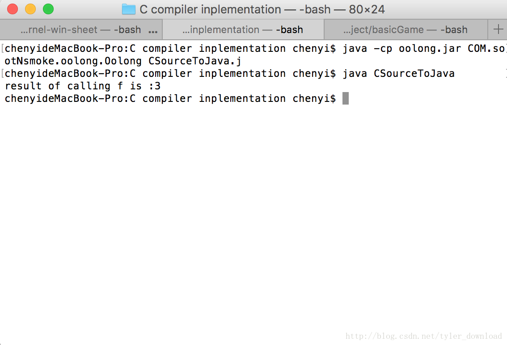

请结合视频阅读本文以便获得更清晰的理解。
更详细的讲解和代码调试演示过程，请参看视频
用java开发C语言编译器
更详细的讲解和代码调试演示过程，请参看视频
如何进入google,算法面试技能全面提升指南
如果你对机器学习感兴趣，请参看一下链接：
机器学习：神经网络导论
更详细的讲解和代码调试演示过程，请参看视频
Linux kernel Hacker, 从零构建自己的内核
jvm运行字节码时，代码的运行必须围绕两种数据结构，一种是堆栈，一种是队列，如果jvm执行某条指令时，该指令需要对数据进行操作，那么被操作的数据在指令执行前，必须要压倒堆栈上。如果堆栈上的数据需要暂时保持起来时，它就会被加载到局部变量队列上。
java代码中，每个方法里面的局部变量包括函数的输入参数都会存储在队列上。我们看下面一个方法：
int f() {
int a;
int b;
a = 1;
b = 2;
}jvm在执行上面代码时，首先会分配一个堆栈和一个队列，一开始堆栈和队列都为空：
stack: null
list: null
要执行语句 a = 1; 时，首先需要把常量1压到堆栈上：
stack: 1
局部变量a对应于队列的第0个元素，把1赋值给变量a，就相当于把堆栈顶部的数值1转移到队列的第0个元素，因此语句a =1;执行后队列和堆栈的情况如下：
stack: null
list: 1,
执行第二条语句b = 2; 时同理，先把常量2压到堆栈上：
stack: 2
list: 1
由于变量b是函数的第二个局部变量，因此它对应队列的第1个元素，把常量2赋值给变量b,就需要把堆栈顶部的数值2移到堆栈的第1个元素：
stack:
list: 1, 2
由此，当我们把C语言编译成java字节码时，在解析函数时，函数中的局部变量都需要对应到虚拟机局部变量队列中的对应元素，在一会给出的例子中，我们会通过代码看看，在解析C语言函数的局部变量时，程序是如何把变量和jvm的变量队列对应起来的。
在此，我们还需要介绍的jvm的return指令, 无论是C代码还是java代码，一旦函数有返回值时，都需要通过关键字return把数据返回给函数的调用者，代码中的return语句在编译成java字节码后，对应着多条语句。如果return 语句返回的数据类型是整形，那么该return语句对应的字节码指令是ireturn, 前面的i表示整形，同理，如果return 返回的数据类型是浮点数，那么对应的java字节码指令就是freturn, 前面的f表示float，如果return 返回的数据类型是double,对应的字节码指令就是dreturn, 前面的d表示double。
需要注意的是return 语句对应的字节码指令必须跟函数的返回值声明相一致，如果函数声明时返回的数据类型是整形，结果函数编译后使用的return指令是freturn,也就是要返回一个浮点数，这种不一致性会被jvm检测到，一旦发现指令的逻辑不一致，虚拟机就会拒绝执行给定的代码。
介绍完理论后，我们看看如何把理论付诸实践。下面的代码将是我们要编译成java字节码的C语言代码：
int f() {
int a;
int b;
a = 1;
b = 2;
return a+b;
}
void main() {
int c;
c = f();
printf("result of calling f is :%d", c);
}函数f的返回值是int,因此在编译成java字节码时，f 里面的return语句编译后要对应上jvm的ireturn指令，同时f中含有两个局部变量a,b,根据前面讲述的理论，在解析到这两个变量时，编译器需要把他们对应到java虚拟机中局部变量队列的相应元素。
我们看看，局部变量是如何对应到虚拟机队列的相应元素的，在ProgramGenerator.java中，添加代码如下：
public class ProgramGenerator extends CodeGenerator {
private static ProgramGenerator instance = null;
private String funcName = "";
....
public int getLocalVariableIndex(Symbol symbol) {
TypeSystem typeSys = TypeSystem.getTypeSystem();
ArrayList<Symbol> list = typeSys.getSymbolsByScope(symbol.getScope());
Collections.reverse(list);
for (int i = 0; i < list.size(); i++) {
if (list.get(i) == symbol) {
return i;
}
}
return -1;
}
....
}每个变量都对应着一个符号对象Symbol, 同时每个变量都有给定的作用范围，getSymbolsByScope把同一作用范围内的变量全部取出来，形成一个队列，例如在f中，有两个具备变量a,b , 他们的作用范围都是f, 如果把a对应的Symbol对象传入上面函数后，list会得到一个队列，该队列包含两个Symbol对象，这两个对象就是变量a和b所对应的Symbol对象。得到这个队列后，我们通过变量符号对象在队列中的位置来对应他们在虚拟机队列中的位置。
第二处需要改动的代码在UnaryNodeExecutor.java中：
public class UnaryNodeExecutor extends BaseExecutor implements IExecutorReceiver{
private Symbol structObjSymbol = null;
private Symbol monitorSymbol = null;
@Override
public Object Execute(ICodeNode root) {
executeChildren(root);
....
switch (production) {
....
case CGrammarInitializer.Name_TO_Unary:
symbol = (Symbol)root.getAttribute(ICodeKey.SYMBOL);
if (symbol != null) {
root.setAttribute(ICodeKey.VALUE, symbol.getValue());
root.setAttribute(ICodeKey.TEXT, symbol.getName());
ICodeNode func = CodeTreeBuilder.getCodeTreeBuilder().getFunctionNodeByName(symbol.getName());
if (func == null && symbol.getValue() != null) {
ProgramGenerator generator = ProgramGenerator.getInstance();
int idx = generator.getLocalVariableIndex(symbol);
generator.emit(Instruction.ILOAD, "" + idx);
}
}
break;
.....
}
....
}
.....
}在解析到某个变量是，我们先看该变量是否已经赋值了，也就是symbol.getValue()返回值不是null, 如果赋值了，那么通过调用getLocalVariableIndex得到该变量在遍历队列里的位置，这个位置将作为它对应在虚拟机变量队列里的位置。假设该变量对应的位置是x, 那么上面代码将输出指令：
iload x
也就是把变量队列中第x个元素加载到堆栈顶端。
第三处需要改动的代码在FunctDeclExecutor.java:
public class FunctDeclExecutor extends BaseExecutor {
private ArrayList<Object> argsList = null;
private ICodeNode currentNode;
ProgramGenerator generator = ProgramGenerator.getInstance();
....
private String emitArgs(Symbol funSymbol) {
argsList = FunctionArgumentList.getFunctionArgumentList().getFuncArgList(true);
String args = "(";
for (int i = 0; i < argsList.size(); i++) {
Symbol symbol = (Symbol)argsList.get(i);
String arg = "";
if (symbol.getDeclarator(Declarator.ARRAY) != null) {
arg += "[";
}
if (symbol.hasType(Specifier.INT)) {
arg += "I";
}
args += arg;
}
if (funSymbol.hasType(Specifier.INT)) {
args += ")I";
} else {
args += ")V";
}
return args;
}
.....
}这里我们要把C语言中的函数声明编译成java字节码的函数声明，原来我们一直默认函数返回值都是void型，现在我们函数可以返回整形了，一个函数本质上也是一个变量，因此函数f也对应着一个Symbol对象，我们通过判断该Symbol对象的类型就可以得知函数的返回值，以例子代码为例： int f() 由于f前面有关键字int来修饰，因此f对应的Symbol对象它包含一个类型为int的specifier,一旦我们判断到返回值是整形时，在把函数声明编译成字节码时，需要在函数参数列表后面加上一个I,用于表明返回值是整形，由此C代码中的函数声明int f()编译成java字节码后对应的代码为：
.method public static f()I。
第四处需要修改的代码还是在UnaryNodeExecutor.java中：
public class UnaryNodeExecutor extends BaseExecutor implements IExecutorReceiver{
....
public Object Execute(ICodeNode root) {
....
case CGrammarInitializer.Unary_LP_RP_TO_Unary:
case CGrammarInitializer.Unary_LP_ARGS_RP_TO_Unary:
....
emitReturnInstruction(symbol);
....
}
private void emitReturnInstruction(Symbol symbol) {
if (symbol.hasType(Specifier.INT)) {
ProgramGenerator.getInstance().emit(Instruction.IRETURN);
} else {
ProgramGenerator.getInstance().emit(Instruction.RETURN);
}
}前面我们提到过，函数声明时，指明了返回值类型的话，那么return必须根据返回值类型对应到字节码相应的xreturn语句，在这里我们通过函数的符号对象，获得函数的返回值类型，如果函数的返回值类型是整形，那么编译器就要输出ireturn语句，如果返回值是void类型，那么输出return指令就可以了。
第五处需要修改的是Symbol.java:
public class Symbol implements IValueSetter{
....
public void setValue(Object obj) {
if (obj != null) {
System.out.println("Assign Value of " + obj.toString() + " to Variable " + name);
}
this.value = obj;
if (this.value != null) {
ProgramGenerator generator = ProgramGenerator.getInstance();
int idx = generator.getLocalVariableIndex(this);
generator.emit(Instruction.ISTORE, "" + idx);
}
}
....
}在变量被赋值时，上面的代码会被调用，前面我们讲过，如果给局部变量赋值，局部变量对应的是虚拟机队列中的某个元素，对其赋值，相当于把堆栈顶部的数据转移到队列的对应位置上，假设例子中变量b对应在队列中的位置为1，上面代码执行后，编译器会输出指令：
istore 1
也就是把堆栈顶部的整形数值转移给队列中的第一个元素。
上面代码执行后，我们的编译器会把给定的C语言程序编译成如下java汇编代码：
.class public CSourceToJava
.super java/lang/Object
.method public static main([Ljava/lang/String;)V
invokestatic CSourceToJava/f()I
istore 0
iload 0
getstatic java/lang/System/out Ljava/io/PrintStream;
ldc "result of calling f is :"
invokevirtual java/io/PrintStream/print(Ljava/lang/String;)V
istore 2
getstatic java/lang/System/out Ljava/io/PrintStream;
iload 2
invokevirtual java/io/PrintStream/print(I)V
getstatic java/lang/System/out Ljava/io/PrintStream;
ldc "
"
invokevirtual java/io/PrintStream/print(Ljava/lang/String;)V
return
.end method
.method public static f()I
sipush 1
istore 0
sipush 2
istore 1
iload 0
iload 1
iadd
ireturn
.end method
.end class上面汇编代码编译成字节码后执行，其结果如下：

通过执行结果可见，我们编译器对代码的编译结果应该是正确的。由于本节将是内容有点抽象，请结合视频演示一起来阅读本文，以便获得更清晰的理解。
更多技术信息，包括操作系统，编译器，面试算法，机器学习，人工智能，请关照我的公众号：